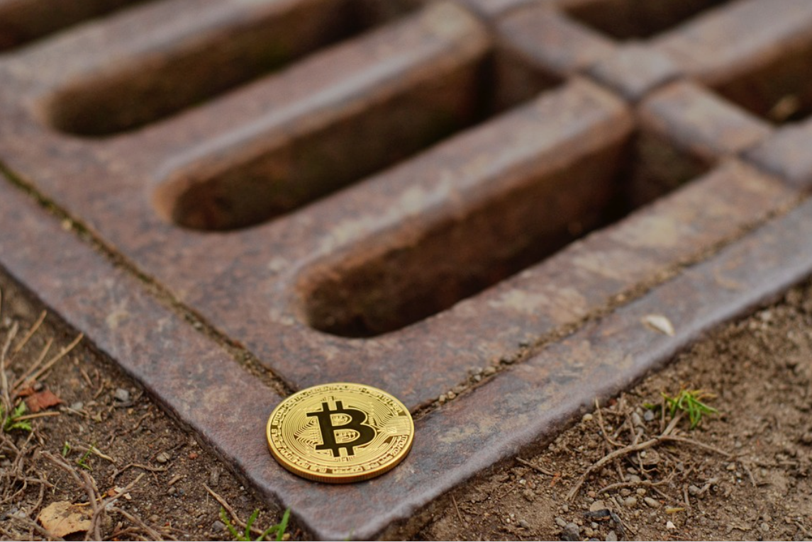

The next decade may prove its importance in the evolution of Bitcoin. In addition to the revolution in the financial ecosystem, there are several areas in the Bitcoin ecosystem that investors should pay close attention to.
The mainstreaming of Bitcoin as a payment mechanism will not happen without technological improvements in the Bitcoin ecosystem. As a viable investment asset or form of payment, Bitcoin's blockchain should be able to process millions of transactions in a short period of time.

Is Bitcoin actually a financial network technology? The government must first face the existing financial regulations, especially the regulation of money laundering prevention and real-name transactions, how should they be applied to online financial technology. Furthermore, since Bitcoin participants often hope to obtain capital gains by trading Bitcoin, how traditional taxation, especially capital gains tax, should be applied to such transactions is also something that legislators must seriously consider.
With digitization, the way people look at property in the future may no longer be just how much money is in the bank, the deeds and land deeds in hand. Collectibles may no longer be CDs, framed paintings, etc. It also depends on how many virtual assets you have in your digital wallet.
Keep in mind that all currencies, both traditional and cryptocurrencies, can lose their value. In terms of Bitcoin's market capitalization today, it may be that network glitches, new regulations, better alternatives keep people from using it.
Crypto Supervision
The blockchain world without borders is bound to continue to be "regulated" in the real world. In April 2021, Coinbase, the largest cryptocurrency exchange in the United States, was listed on the Nasdaq in the United States.
The U.S. government has been making new progress and actions recently in regulating the rapidly growing cryptocurrency.
From the listing of Coinbase in the United States to the entry of Bitcoin ETFs into the traditional capital field, although the regulatory policies in the United States have been trying to weaken the influence of cryptocurrencies, such as restricting the spot listing of ETFs, these actions have not had much impact on the cryptocurrency market. As a new financial situation, cryptocurrencies are still rapidly integrating into traditional capital and becoming part of the US economic landscape.
Many governments have issued warnings to some cryptocurrency trading platforms, mainly because they offer derivatives trading and are not registered in their own countries. It also reflects that more and more countries are no longer laissez-faire towards cryptocurrency trading and are starting to take the initiative.
At present, encrypted assets are playing an increasingly important role in the global financial market, so more and more countries are formulating corresponding regulatory mechanisms. Most countries regulate for defensive purposes based on AML/CFT risks, with the potential to drive further regulatory measures.
With the rapid development of new things such as DeFi and NFT, the regulatory issues of the encryption market faced by countries and regions around the world are becoming more and more complicated. The regulation and development of cryptocurrency will test the governance capabilities of various governments.